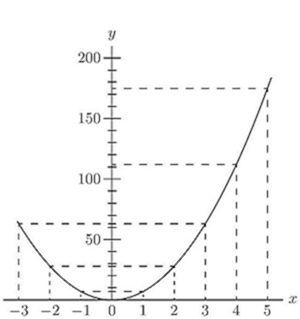
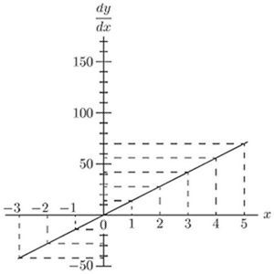

Chapter 7: Chapter V. Next Stage. What to Do with Constants¶
IN our equations we have regarded  as growing, and as a result of being made to grow
as growing, and as a result of being made to grow  also changed its value and grew. We usually think of as a quantity that we can vary; and, regarding the variation of as a sort of cause, we consider the resulting variation of as an effect. In other words, we regard the value of as depending on that of . Both and are variables, but is the one that we operate upon, and is the "dependent variable." In all the preceding chapter we have been trying to find out rules for the proportion which the dependent variation in bears to the variation independently made in .
also changed its value and grew. We usually think of as a quantity that we can vary; and, regarding the variation of as a sort of cause, we consider the resulting variation of as an effect. In other words, we regard the value of as depending on that of . Both and are variables, but is the one that we operate upon, and is the "dependent variable." In all the preceding chapter we have been trying to find out rules for the proportion which the dependent variation in bears to the variation independently made in .
Our next step is to find out what effect on the process of differentiating is caused by the presence of constants, that is, of numbers which don't change when or change their values.
Added Constants.
Let us begin with some simple case of an added constant, thus:
Let Just as before, let us suppose to grow to and to grow to  .
.
Then: Neglecting the small quantities of higher orders, this becomes Subtract the original , and we have left:
So the 5 has quite disappeared. It added nothing to the growth of , and does not enter into the differential coefficient. If we had put 7, or 700, or any other number, instead of 5, it would have disappeared. So if we take the letter  , or
, or  , or to represent any constant, it will simply disappear when we differentiate.
, or to represent any constant, it will simply disappear when we differentiate.
If the additional constant had been of negative value, such as -5 or , it would equally have disappeared.
Multiplied Constants.
Take as a simple experiment this case:
Let .
Then on proceeding as before we get:
Then, subtracting the original , and neglecting the last term, we have
Let us illustrate this example by working out the graphs of the equations and , by assigning to a set of successive values, 0, 1, 2, 3, etc., and finding the corresponding values of and of  .
.
These values we tabulate as follows:
|
0 | 1 | 2 | 3 | 4 | 5 | -1 | -2 | -3 |
|---|---|---|---|---|---|---|---|---|---|
|
0 | 7 | 28 | 63 | 112 | 175 | 7 | 28 | 63 |
|
0 | 14 | 28 | 42 | 56 | 70 | -14 | -28 | -42 |
Now plot these values to some convenient scale, and we obtain the two curves, Figs. 6 and 6a.
Carefully compare the two figures, and verify by inspection that the height of the ordinate of the derived curve, Fig. 6a, is proportional to the slope of the original curve,[4] Fig. 6, at the corresponding value of . To the left of the origin, where the original curve slopes negatively (that is, downward from left to right) the corresponding ordinates of the derived curve are negative.


Now if we look back at p. 18, we shall see that simply differentiating  gives us . So that the differential coefficient of is just 7 times as big as that of . If we had taken , the differential coefficient would have come out eight times as great as that of . If we put , we shall get
gives us . So that the differential coefficient of is just 7 times as big as that of . If we had taken , the differential coefficient would have come out eight times as great as that of . If we put , we shall get
If we had begun with , we should have had . So that any mere multiplication by a constant reappears as a mere multiplication when the thing is differentiated. And, what is true about multiplication is equally true about division: for if, in the example above, we had taken as the constant instead of 7, we should have had the same come out in the result after differentiation.
Some Further Examples.
The following further examples, fully worked out, will enable you to master completely the process of differentiation as applied to ordinary algebraical expressions, and enable you to work out by yourself the examples given at the end of this chapter.
(1) Differentiate .
is an added constant and vanishes (see p. 25).
We may then write at once
(2) Differentiate .
The term vanishes, being an added constant; and as , in the index form, is written , we have
(3) If ,
find the differential coefficient of with respect to .
As a rule an expression of this kind will need a little more knowledge than we have acquired so far; it is, however, always worth while to try whether the expression can be put in a simpler form.
First we must try to bring it into the form some expression involving only.
The expression may be written
Squaring, we get which simplifies to or that is hence
(4) The volume of a cylinder of radius  and height
and height  is given by the formula . Find the rate of variation of volume with the radius when . and . If , find the dimensions of the cylinder so that a change of 1 in. in radius causes a change of 400 cub. in. in the volume.
is given by the formula . Find the rate of variation of volume with the radius when . and . If , find the dimensions of the cylinder so that a change of 1 in. in radius causes a change of 400 cub. in. in the volume.
The rate of variation of  with regard to is
with regard to is
If and this becomes 690.8. It means that a change of radius of 1 inch will cause a change of volume of 690.8 cub. inch. This can be easily verified, for the volumes with and are 1570 cub. in. and 2260.8 cub. in. respectively, and .
Also, if
(5) The reading  of a Féry's Radiation pyrometer is related to the Centigrade temperature
of a Féry's Radiation pyrometer is related to the Centigrade temperature  of the observed body by the relation where
of the observed body by the relation where  is the reading corresponding to a known temperature of the observed body.
is the reading corresponding to a known temperature of the observed body.
Compare the sensitiveness of the pyrometer at temperatures , given that it read 25 when the temperature was .
The sensitiveness is the rate of variation of the reading with the temperature, that is  . The formula may be written and we have
. The formula may be written and we have
When and 1200, we get and 0.1728 respectively.
The sensitiveness is approximately doubled from to , and becomes three-quarters as great again up to .
Exercises II. (See p. 252 for Answers.)
Differentiate the following:
(1) .
(2) .
(3) .
(4) .
(5) .
(6) .
Make up some other examples for yourself, and try your hand at differentiating them.
(7) If and be the lengths of a rod of iron at the temperatures . and . respectively, then . Find the change of length of the rod per degree Centigrade.
(8) It has been found that if be the candle power of an incandescent electric lamp, and be the voltage, , where and are constants.
Find the rate of change of the candle power with the voltage, and calculate the change of candle power per volt at 80,100 and 120 volts in the case of a lamp for which and .
(9) The frequency  of vibration of a string of diameter , length and specific gravity , stretched with a force
of vibration of a string of diameter , length and specific gravity , stretched with a force  , is given by
, is given by
Find the rate of change of the frequency when and are varied singly.
(10) The greatest external pressure  which a tube can support without collapsing is given by where and are constants, is the thickness of the tube and is its diameter. (This formula assumes that is small compared to .)
which a tube can support without collapsing is given by where and are constants, is the thickness of the tube and is its diameter. (This formula assumes that is small compared to .)
Compare the rate at which varies for a small change of thickness and for a small change of diameter taking place separately.
(11) Find, from first principles, the rate at which the following vary with respect to a change in radius:
(a) the circumference of a circle of radius ;
(b) the area of a circle of radius ;
(c) the lateral area of a cone of slant dimension  ;
;
(d) the volume of a cone of radius and height ;
(e) the area of a sphere of radius ;
(f) the volume of a sphere of radius .
(12) The length of an iron rod at the temperature being given by , where is the length at the temperature , find the rate of variation of the diameter of an iron tyre suitable for being shrunk on a wheel, when the temperature varies.
7.1 Footnotes:¶
[4] See p. 76 about slopes of curves.